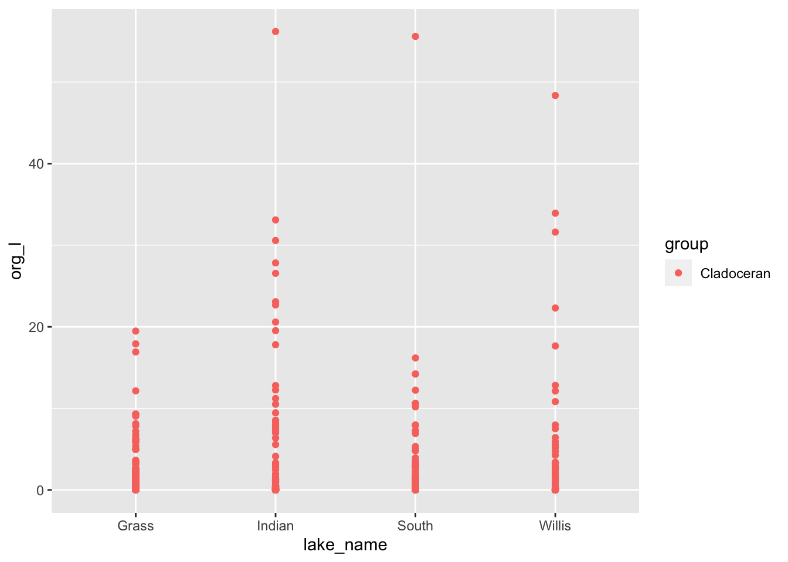
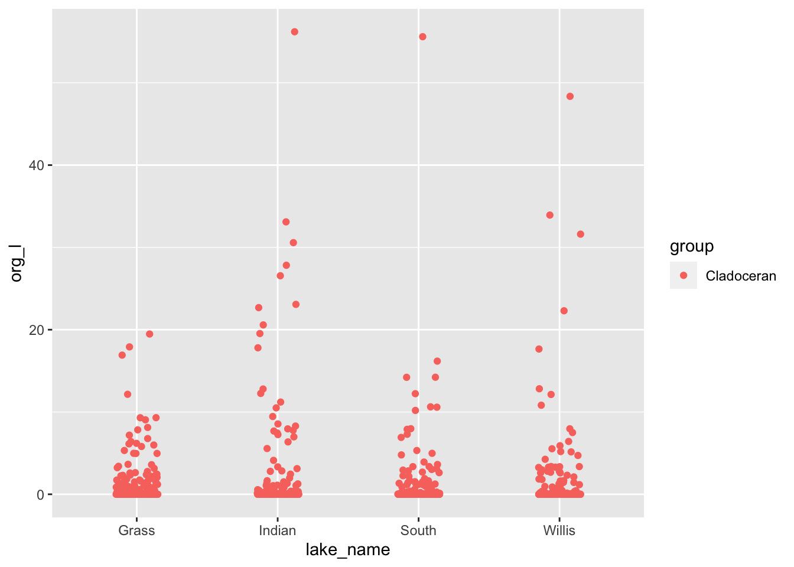
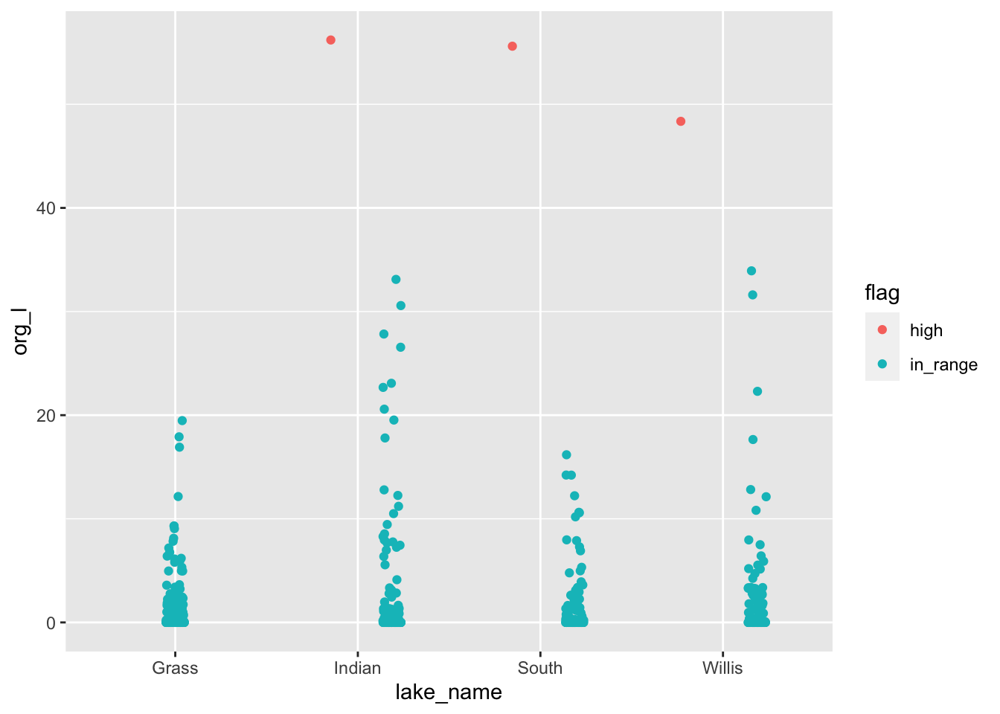

Using ifelse and case_when to categorize and flag data
Bill Perry
2019/10/26
# Load Libraries ----
# this is done each time you run a script
library("readxl") # read in excel files
library("tidyverse") # dplyr and piping and ggplot etc
library("lubridate") # dates and times
library("scales") # scales on ggplot ases
library("skimr") # quick summary stats
library("janitor") # clean up excel imports
library("patchwork") # multipanel graphs
library("plotly")##
## Attaching package: 'plotly'## The following object is masked from 'package:ggplot2':
##
## last_plot## The following object is masked from 'package:stats':
##
## filter## The following object is masked from 'package:graphics':
##
## layout# read in file ----
lakes.df <- read_csv("data/Reduced_Lake_Long_Genus_Species.csv")##
## ── Column specification ────────────────────────────────────────────────────────
## cols(
## permanent_id = col_double(),
## lake_name = col_character(),
## date = col_date(format = ""),
## group = col_character(),
## genus_species = col_character(),
## org_l = col_double(),
## year = col_double()
## )# Lets say we want to look at the data and figure out where outliers are
# I personally like to see what I am doing first
# lets look at only Cladocerans first
lakes.df %>%
filter(group=='Cladoceran') %>%
ggplot(aes(lake_name, org_l, color=group)) +
geom_point(
) 
# Points overlap and you might want to spread them out a bit
lakes.df %>%
filter(group=='Cladoceran') %>%
ggplot(aes(lake_name, org_l, color=group)) +
geom_point(
position= position_jitterdodge(jitter.width = 0.3)
) # There are some high values - how can we figure out what they are...
# there are a few aproaches
clad.plot <- lakes.df %>%
filter(group=='Cladoceran') %>%
ggplot(aes(lake_name, org_l, color=group)) +
geom_point(
position= position_jitterdodge(jitter.width = 0.3)
)
clad.plot
# I personally like the plotly package and GGPlotly
clad.plot <- lakes.df %>%
filter(group=='Cladoceran') %>%
ggplot(aes(lake_name, org_l, color=group, date=date, lake_name = lake_name, genus_species= genus_species)) +
geom_point(
position= position_jitterdodge(jitter.width = 0.1)
)
clad.plot
ggplotly(clad.plot, tooltip = c("date", "genus_species"))# We could also do this by looking at the values that are above some threshold
# Display values greater than a value by group ------
lakes.df %>% group_by(lake_name) %>%
filter(org_l > 40)## # A tibble: 8 x 7
## # Groups: lake_name [4]
## permanent_id lake_name date group genus_species org_l year
## <dbl> <chr> <date> <chr> <chr> <dbl> <dbl>
## 1 47723283 Willis 1994-07-27 Copepod Tropocyclops_extensus 57.3 1994
## 2 47723283 Willis 2004-07-06 Cladoceran Bosmina_longirostris 48.4 2004
## 3 131845587 Grass 1995-06-13 Copepod Leptodiaptomus_minut… 46.1 1995
## 4 131845587 Grass 1996-06-18 Copepod Leptodiaptomus_minut… 44.4 1996
## 5 131845587 Grass 2004-07-13 Copepod Leptodiaptomus_minut… 41.2 2004
## 6 131845836 Indian 1999-06-29 Cladoceran Bosmina_longirostris 56.2 1999
## 7 131846593 South 2000-07-18 Cladoceran Bosmina_longirostris 55.6 2000
## 8 131846593 South 1995-09-13 Copepod Leptodiaptomus_minut… 56.0 1995# Using multiple conditions
lakes.df %>% group_by(lake_name) %>%
filter(org_l > 40 & lake_name == "Willis")## # A tibble: 2 x 7
## # Groups: lake_name [1]
## permanent_id lake_name date group genus_species org_l year
## <dbl> <chr> <date> <chr> <chr> <dbl> <dbl>
## 1 47723283 Willis 1994-07-27 Copepod Tropocyclops_extensus 57.3 1994
## 2 47723283 Willis 2004-07-06 Cladoceran Bosmina_longirostris 48.4 2004# or yes you can use or as |
lakes.df %>% group_by(lake_name) %>%
filter(org_l > 40 & lake_name == "Willis" |
org_l > 40 & lake_name == "South" )## # A tibble: 4 x 7
## # Groups: lake_name [2]
## permanent_id lake_name date group genus_species org_l year
## <dbl> <chr> <date> <chr> <chr> <dbl> <dbl>
## 1 47723283 Willis 1994-07-27 Copepod Tropocyclops_extensus 57.3 1994
## 2 47723283 Willis 2004-07-06 Cladoceran Bosmina_longirostris 48.4 2004
## 3 131846593 South 2000-07-18 Cladoceran Bosmina_longirostris 55.6 2000
## 4 131846593 South 1995-09-13 Copepod Leptodiaptomus_minut… 56.0 1995# Flagging data -----
# First the ifelse statement
lakes.df <- lakes.df %>%
mutate(flag = ifelse(org_l >40, "high", "in_range"))# Look at data...
lakes.df %>%
filter(group=='Cladoceran') %>%
ggplot(aes(lake_name, org_l, color=flag)) +
geom_point(
position= position_jitterdodge(jitter.width = 0.1)
) 
# Case_when ------
# you can nest if_else statements can be a mess
# this is where case_when comes into play
# this is the same but you can add more conditions easier
lakes.df <- lakes.df %>%
mutate(flag = case_when(org_l > 40 ~ "high",
TRUE ~ "in_range"))lakes.df <- lakes.df %>%
mutate(flag = case_when(org_l > 40 ~ "high",
org_l < 40 & org_l >=30 ~ "medium",
org_l < 30 & org_l >=20 ~ "lower",
TRUE ~ "in_range"))